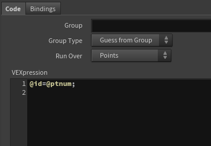

第 8 週
已完成：
待辦事項：
-
研究 Unreal Engine 中的 shader 流程
-
為鏡頭 3 嘗試不同的佈局
-
把葡萄風信子轉成粒子版本
-
優化鏡頭 3 的佈局，讓它看起來更真實
這週我主要專注在用 VAT（particle sprites）把葡萄風信子轉成粒子。



要成功輸出 VAT 粒子，每個粒子都必須有有效的 ID 屬性。未使用的屬性也要刪除，以免輸出出錯。輸出前要先快取模擬，否則過程會變得非常慢。
問題：
粒子版葡萄風信子的一個問題是，我們需要粒子分佈在體積內部，而不只是表面。但在 Houdini 中使用 Points from Volume 時，產生的點每一格都會改變，導致生長動畫不穩定、明顯抖動。為了解決這個問題，Yichen 和我用 Claude 探索了不同的解法，Craig Fowler 也幫我們找到更穩定的做法。
解法：
我們先在 Houdini 中用 TimeShift 把幾何體鎖定在第一格，再用 IsoOffset 轉成體積。為了避免體積中出現多餘的線狀瑕疵，需要提高 Uniform Sampling Divs 的數值。在體積內散佈點之後，再用 Point Deform 把這些點從凍結的幾何體轉回原本有動畫的模型上。

PCG：
為了讓葡萄風信子的蟲視角看起來真實，所有植物都要維持在一致的地面高度。Ben 協助我們在 Unreal Engine 中用 PCG 自動產生佈局，並調整攝影機位置來加強真實感。佈局是用 Spawn Actor 和 Transform Points 建立的，能把四種不同的葡萄風信子變體分佈在指定範圍內。


UV：
一開始葉子的 UV 沒有填滿 UV 格，導致貼圖在 Unreal Engine 中看起來模糊。我調整並放大 UV，讓它們填滿可用的空間，貼圖清晰度因此改善。


-
優化葡萄風信子和葉子的材質